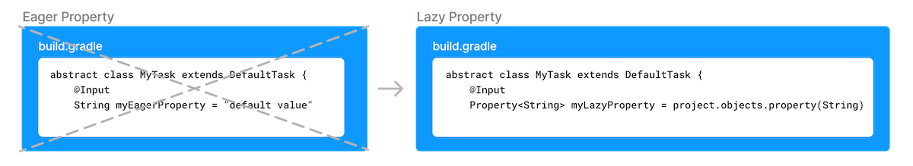
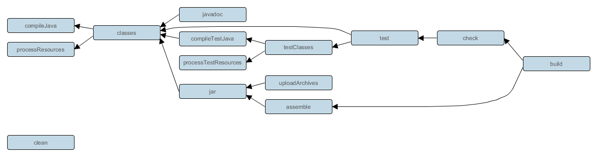
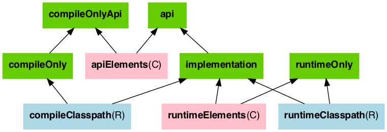
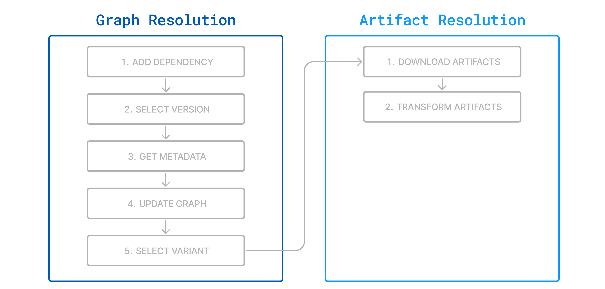

Gradle 完全指南
Gradle 完全指南
全景导图
mindmap
root((Gradle))
核心概念
Project模型
Task系统
生命周期
插件机制
依赖管理
Configuration
依赖解析
版本冲突
传递依赖
构建脚本
Groovy DSL
Kotlin DSL
多项目构建
插件生态
Java插件
Spring Boot插件
自定义插件
性能优化
构建缓存
并行构建
增量构建
测试管理
单元测试
集成测试
覆盖率什么是 Gradle
Gradle 是新一代的自动化构建工具，基于 Apache Ant 和 Apache Maven 的概念发展而来。与 Maven 使用 XML 配置不同，Gradle 采用基于 Groovy 或 Kotlin 的领域特定语言（DSL）来声明项目配置，大幅简化了构建脚本的复杂度。
核心特点（参考 Gradle 官方文档）：
- 灵活性：Gradle 的设计理念是"语言优先"而非"框架优先"，提供了高度的可扩展性
- 性能：支持增量构建、构建缓存、并行执行等优化手段
- 生态：Android 官方构建工具，拥有丰富的插件生态
- 兼容性：可以导入 Maven 和 Ivy 仓库，支持迁移现有项目


这里的 AIDL 是 Android Interface Definition Language 的意思。Dex 是 Dalvik executable format 的意思。

核心概念
Gradle 是一个自动化构建工具（build automation），通过组织一系列 Task 来完成自动化构建。与 Maven 不同，Gradle 不标榜自己是项目管理工具，而是专注于构建自动化。
Project 模型
每个 Gradle 构建由一个或多个 Project 组成。build.gradle 文件本质上是在配置一个 Project 对象（参考 Gradle DSL Reference - Project）。
1 | |
Project 的核心职责：
- 管理依赖（dependencies）
- 定义任务（tasks）
- 应用插件（plugins）
- 配置属性（properties）
Task 系统
Task 是 Gradle 中最重要的概念。构建过程由一系列 Task 组成，每个 Task 代表一个原子操作（如编译、测试、打包）。以打包生成 APK 为例，整个过程要经过资源处理、javac 编译、dex 打包、apk 打包、签名等步骤，每个步骤就对应一个 Task。
Task 的创建方式
1 | |
Task 的依赖关系
1 | |
Task 的配置
1 | |
生命周期
Gradle 构建分为三个阶段（参考 Gradle User Guide - Build Lifecycle）：
graph LR
A[初始化阶段] --> B[配置阶段]
B --> C[执行阶段]1. 初始化阶段（Initialization）
- 读取
settings.gradle - 确定哪些项目参与构建
- 为每个项目创建
Project实例
1 | |
2. 配置阶段（Configuration）
- 执行所有项目的
build.gradle脚本 - 构建 Task 依赖图
- 确定需要执行的 Task
3. 执行阶段（Execution）
- 按依赖顺序执行 Task
- 执行 Task 的
doFirst和doLast动作
插件机制
插件是 Gradle 功能的主要扩展方式。每个插件都会引入新的 Task、配置项和约定（参考 Gradle Plugin Portal）。
应用插件
1 | |
常用插件
| 插件 | 功能 | 引入的主要 Task |
|---|---|---|
java |
Java 项目支持 | compileJava, test, jar |
application |
可执行应用 | run, installDist |
maven-publish |
Maven 发布 | publish, publishToMavenLocal |
org.springframework.boot |
Spring Boot | bootJar, bootRun |
DSL 概念
Gradle 可以使用 Groovy 或 Kotlin DSL 编写。DSL（Domain Specific Language）是领域特定语言，相对应的是 GPL（General-Purpose Language）如 Java。与 GPL 相比，DSL 使用简单、定义简洁；比起配置文件，DSL 又可以实现语言逻辑。
以 android {} 为例，这本身是一个函数调用，参数是一个闭包，但这种定义方式明显更简洁。
核心类型
Gradle 的核心类型（参考 Gradle DSL Reference）：
- Project：
build.gradle实际上就是在描述这个类型对象的生成 - Task：构建的基本执行单元
- Gradle：全局 Gradle 实例
- Settings：项目设置
- SourceSet：源码集合
- Configuration：依赖配置
- Plugin：插件接口
- ExtraPropertiesExtension
- PluginDependenciesSpec
- PluginDependencySpec
- PluginManagementSpec
- ResourceHandler
- TextResourceFactory
- InputChanges
- Distribution
Project 对象
我们常见的属性其实是一个 Project 对象的实例，使用 groovy 进行配置更像是使用一种 DSL 进行设值。
1 | |
这里面的 buildscript 的 dependencies 是给 build.gradle 这个项目脚本构建中使用的。而我们常见的其他地方的 dependencies 是给项目打包/运行的时候项目自身用的。
1 | |
在 idea 里，右侧的栏目列出的只有任务（插件看不见，被融入任务列表）+依赖。
gradle 能支持的仓库类型/风格有 remote（maven、ivy，可以用Nexus/Sonatype/JFrog）和 local（flatDir）。
Task
任务可以被分为：Application tasks、Build tasks、Documentation tasks、Other tasks。
任务管理
A task represents some independent unit of work that a build performs, such as compiling classes, creating a JAR, generating Javadoc, or publishing archives to a repository.
1 | |
基本的任务创建形式
最新版的做法：
1 | |
To create a custom task, you must subclass DefaultTask in Groovy DSL or DefaultTask in Kotlin DSL.要创建一个自定义任务，你必须在 Groovy DSL 中继承 DefaultTask 类，或者在 Kotlin DSL 中继承 DefaultTask 类。
1 | |
执行分析：执行 Task 的时候实际上是执行其拥有的 actions List，它是 Task 对象实例的成员变量；在创建任务时Gradle会解析其中被 TaskAction 注解的方法作为其Task执行的 action，并添加到 actions List，其中 doFirst 和 doList 会被添加到 action List 第一位和最后一位。
每次构建（build）至少由一个 project 构成，一个 project 由一到多个 task 构成。每个 task 代表了构建过程当中的一个原子性操作，比如编译，打包，生成 javadoc，发布等等这些操作。
project
– task1 （Action1、Action2…）
– task2 （Action1、Action2…）
– …
通过任务把功能注册成插件
1 | |
定义任务的依赖关系
1 | |
向任务注入对象
可注入对象：
- ObjectFactory- 允许创建模型对象。
- ProjectLayout- 提供对关键项目位置的访问权限。
- BuildLayout- 提供对 Gradle 构建的重要位置的访问。
- ProviderFactory- 创建Provider实例。
- WorkerExecutor- 允许任务并行运行。
- FileSystemOperations- 允许任务在文件系统上运行操作，例如删除文件、复制文件或同步目录。
- ArchiveOperations- 允许任务对存档文件（例如 ZIP 或 TAR 文件）运行操作。
- ExecOperations- 允许任务运行外部进程，并提供专门的运行外部java程序的支持。
- ToolingModelBuilderRegistry- 允许插件注册 Gradle 工具 API 模型。
1 | |
1 | |
属性管理
Project、Task 和 SourceSet 都允许用户添加额外的自定义属性、并对自定义属性进行读取和设置。
- 方式：通过ext属性，添加多个 ext 代码块
- 优点：相比局部变量有广泛的作用域，可以跨 Project、跨 Task 访问，只要能访问这些属性所属的对象即可
1 | |
惰性加载

Gradle 使用两个接口表示惰性属性：
- property - 表示可以查询和更改的值。属性可能是可变的，这意味着它同时具有get()方法和set()方法（类似C#）。
- provider - 表示只能查询而不能更改的值。也叫Read-only Managed Properties (Providers)。
Plugin
Plugins are the primary method to organize build logic and reuse build logic within a project.
Plugins are used to extend Gradle’s capability（功能） and optionally contribute tasks to a project.
plugin 里带有很多 tasks。一个 plugin 主要影响 source set 和 configuration，带来了属性（SourceSet就性质而言是一种 property，但文档把它称作 domain objects）、方法和任务。
- Java 插件
- 插件 ID: java
- 主要功能：
- 添加 Java 编译能力
- 提供标准的 Java 项目结构和任务（如 compileJava, test）
- 添加基本的依赖配置（如 implementation, testImplementation）
- 适用场景：基本的 Java 项目，很多插件都扩展本插件，包括但不限于：Application、Java Library
- Application 插件
- 插件 ID: application
- 主要功能：
- 包含 Java 插件的所有功能
- 添加运行和打包应用程序的能力
- 提供 run 任务来执行应用程序
- 可以创建可分发的 ZIP 和 TAR 包
- 适用场景：需要作为独立应用程序运行的 Java 项目
- Java Library 插件
- 插件 ID: java-library
- 主要功能：
- 扩展了 Java 插件
- 引入 api 和 implementation 依赖配置的区别
- 更好地控制库的 API 暴露
- 适用场景：开发供其他项目使用的 Java 库
- Spring Boot 插件
- 插件 ID: org.springframework.boot
- 主要功能：
- 提供 Spring Boot 特定的任务（如 bootRun）
- 能够创建可执行的 JAR 或 WAR 文件
- 管理 Spring Boot 依赖版本
- 提供 Spring Boot 的自动配置支持
- 适用场景：Spring Boot 应用程序开发
- Spring Dependency Management 插件
- 插件 ID: io.spring.dependency-management
- 主要功能：
- 提供类似 Maven BOM（Bill of Materials）的依赖管理
- 允许在不指定版本的情况下导入依赖
- 可以与 Spring Boot 插件配合使用，也可以单独使用
- 适用场景：需要统一管理依赖版本的项目，特别是 Spring 项目
- 主要区别和使用场景：
- 基本 Java 项目：使用 java 插件。
- 可执行的 Java 应用：使用 application 插件。
- Java 库开发：使用 java-library 插件。
- Spring Boot 应用开发：使用 org.springframework.boot 插件，通常与 io.spring.dependency-management 插件一起使用。
- 需要精细控制依赖版本的项目：使用 io.spring.dependency-management 插件。
这些插件可以组合使用，例如：
- 一个 Spring Boot 应用通常会同时使用 java、org.springframework.boot 和 io.spring.dependency-management 插件。
- 一个作为库开发的 Spring 项目可能会使用 java-library 和 io.spring.dependency-management 插件。
大部分构建类的插件都是派生自 Base 插件，比如 java 插件，然后 The Java Library Plugin also integrates the above tasks into the standard Base Plugin lifecycle tasks，比如jar is attached to assemble，test is attached to check。
分类
- Core plugins - Gradle develops and maintains a set of Core Plugins. Gradle Core plugins are a set of plugins that are included in the Gradle distribution itself. 核心插件不需要指定版本。
- Community plugins - Gradle’s community shares plugins via the [Gradle Plugin Portal][1]. Community plugins are plugins developed by the Gradle community, rather than being part of the core Gradle distribution. These plugins provide additional functionality that may be specific to certain use cases or technologies.
- Local plugins/Custom plugins - Gradle enables users to create custom plugins using APIs.Custom or local plugins are developed and used within a specific project or organization. These plugins are not shared publicly and are tailored to the specific needs of the project or organization.
Convention plugins are plugins used to share build logic between subprojects (modules). Users can wrap common logic in a convention plugin. For example, a code coverage plugin used as a convention plugin can survey code coverage for the entire project and not just a specific subproject.
Gradle highly recommends the use of Convention plugins.
所有的插件的定义都有这样一段tasks.register。
区分插件的标准是看是已经被编译成字节码（binary plugin），还是能看到源码（script plugin i）。A plugin often starts as a script plugin (because they are easy to write). Then, as the code becomes more valuable, it’s migrated to a binary plugin that can be easily tested and shared between multiple projects or organizations.二进制插件可以更高效共享和运行。
插件的使用总是分两步：
- resolve 解析：这是配置 repo 和 class path 的意义
- apply：会调用
Plugin.apply(T)
声明
1 | |
如果在顶层指定过版本，则在其他 method 里可以不指定版本了。
现代的 gradle有个特殊的目录和文件，对全部项目可以这样声明：
1 | |
插件仓库
1 | |
java

这几幅图说明了 java 插件是如此重要！我们常见的构建任务都是这个插件带来的。
SourceSet
Gradle’s Java support was the first to introduce a new concept for building source-based projects: source sets。
源码集的概念是由 java 插件引入的，不是 gradle 自带的。
source code and resources files 应该被 logically grouped together。每个 source set 要关注自己的 dependencies 和 classpath。
这个插件的假定 layout 是这样的：
- src/main/java
- Production Java source.
- src/main/resources
- Production resources, such as XML and properties files.
- src/test/java
- Test Java source.
- src/test/resources
- Test resources.
- src/sourceSet/java
- Java source for the source set named sourceSet.
- src/sourceSet/resources
- Resources for the source set named sourceSet.
The Java plugin will compile whatever it finds, and handles anything which is missing.
You configure the project layout by configuring the appropriate source set.
我们常见的 main 和 test 是两个 java plugin 从 apache maven 借来的 convention source set（所以它 maven-compatible）。按照 gradle 的观点，只要共享一个 complilation 和 runtime classpath，就可以把 test 配在同一个 source set 里。main 是用来存放 production source code，而 test 是用来存放测试 source code（默认是 unit test，不是 integration test、acceptance test）。这些 source 是 set 是用来保管 source code 的集合的，output 是它的附加属性。
比如上面的默认 source set 大致上等价于这样一段配置：
1 | |
source set 要关注这三个问题：
- 源代码和源代码的定位
- 编译的类路径-依赖来自于何处
- classes 文件应该被输出到何处

这个图里面，configuration 是 property，白色的是一个编译任务（每个 sourceSet 有一个编译任务，名称叫 compileSourceSetJava），三个绿方块就是 source set 关注的三个问题。sourceSet 可以被替换为 main 和 test。
1 | |
Most language plugins, Java included, automatically create a source set called main, which is used for the project’s production code. This source set is special in that its name is not included in the names of the configurations and tasks, hence why you have just a compileJava task and compileOnly and implementation configurations rather than compileMainJava, mainCompileOnly and mainImplementation respectively.

每个源码集都有一个专有的 processSourceSetResources (or processResources for the main source set)。
什么时候我们需要使用一个 custom source set？
当我们要形成特定的布局定义的时候：
- 编译需要一个独特的类路径（unique classpath）
- 生成需要特殊处理的类，不同于 main 和 test
如果有个三方的源代码需要加入源码集里，有个例子是：
1 | |
srcDir 是个方法，调用方法的目的是 append，与之对应的 srcDirs 是个属性，调用属性的目的是 replace。这是 gradle 的一个设计惯例。是 method 还是 property 看赋值方式是看通过空格还是=赋值，也可以通过查看文档来了解。
为集成测试准备的一些配置
参考[setting up integration tests][2]
1 | |
依赖配置（dependency configuration）：


不同的 dependency 会在不同的 source set 的不同的 phase-compile、implementation、runtime 三重 scope 可见（The compile and runtime configurations have been removed with Gradle 7.0. Please refer to the [upgrade guide][3] how to migrate to implementation and api configurations.）。这是一个 visible 问题。
java plugin 还有一个 java extension，这个 java extension 有一个 java block 来配置，如：
1 | |
java library
对于 building 一个 java project 而言，最重要的插件是 java library 而不是 java。它会提供如下任务：
- A compileJava task that compiles all the Java source files under src/main/java
- A compileTestJava task for source files under src/test/java
- A test task that runs the tests from src/test/java
- A jar task that packages the main compiled classes and resources from src/main/resources into a single JAR named
- .jar - A javadoc task that generates Javadoc for the main classes
管理 api exposed to consumer。
A library is a Java component meant to be consumed by other components. It’s a very common use case in multi-project builds, but also as soon as you have external dependencies.
在使用多模块和外部依赖的时候，管理 library 成了一个常见的用例。
java library 插件会让它的 consumer transitively 看到 api 依赖，但看不到 implementation 依赖。可以说 compile/implementation 是 gradle 自带的 dependency configuration，而 api 是 java library 带来的。
官方有个例子：
1 | |
这个模块要暴露的 api 仍然要暴露签名中的 httpclient 相关的类库给消费者，但不需要暴露内部的 ExceptionUtils 的应用。所以合理的 gradle 配置如下：
1 | |
在 Java 9 以后，只要使用一个module-info.java文件，就可以把一个 java 类库变成 java module，如：
1 | |
其内容为：
1 | |
这个插件在两类 source set 视角下，进行 configuration set up 的 graph 如下：


java-platform
1 | |
maven 的 bom 必须这样在 gradle 里使用。
依赖项约束的功能与依赖项类似，主要区别在于它们本身不会引入依赖项。相反，约束定义了版本要求，当依赖项通过其他方式引入项目时，这些要求会影响解析过程。
虽然默认情况下约束不是严格版本，但您可以根据需要指定严格版本约束。一旦包含依赖项，约束指定的版本就会参与冲突解决，就像将其声明为直接依赖项一样。
日志
级别
- ERROR (–quiet 或 -q)：仅显示错误信息。这个级别用于最简化的输出，只在构建失败时提供必要的错误信息。
- WARNING：显示警告和错误信息。默认情况下，Gradle会在WARNING级别显示输出，提供有关潜在问题的警告信息。
- LIFECYCLE：显示构建生命周期的主要事件，例如任务的开始和结束。这是Gradle的默认日志级别，适合大多数用户的日常使用。
- INFO (–info)：显示详细的构建信息，包括任务执行的更多细节和配置信息。这个级别适用于需要了解构建过程更多细节的用户。
- DEBUG (–debug)：显示非常详细的调试信息，包括内部状态和详细的执行过程。这个级别通常用于调试构建脚本或插件。
- TRACE：显示最详细的日志信息，包括所有可能的内部操作和状态变化。这个级别通常用于开发Gradle本身或深入调试复杂问题。
依赖管理
Dependency management is an automated technique for declaring and resolving external resources required by a project.
依赖管理要回答好三个问题：
- 你需要什么依赖，名称和版本
- 你用来干什么：compilation 还是 running，这一点不易区分开来
- 在哪里找这个依赖
1 | |
- Repository
- Configuration：
implementation是一种 configuration（所以 api 也是一种 configuration），a named collection of dependencies - Module coordinate：group name + artifact name + version
libs.versions.toml
目前这个方案被拿来当作 version catalog 用：
1 | |
1 | |
configuration 分类
| Configuration Name | Description | Used to: |
|---|---|---|
| api | 用于编译和运行时都需要的依赖，并包含在发布的 API 中。 Dependencies required for both compilation and runtime, and included in the published API. |
Declare Dependencies |
| implementation | 用于编译和运行时都需要的依赖。 Dependencies required for both compilation and runtime. |
Declare Dependencies |
| compileOnly | 仅在编译时需要的依赖，不包含在运行时或发布中。 Dependencies needed only for compilation, not included in runtime or publication. |
Declare Dependencies |
| compileOnlyApi | 仅在编译时需要的依赖，但包含在发布的 API 中。 Dependencies needed only for compilation, but included in the published API. |
Declare Dependencies |
| runtimeOnly | 仅在运行时需要的依赖，不包含在编译类路径中。 Dependencies needed only at runtime, not included in the compile classpath. |
Declare Dependencies |
| testImplementation | 用于编译和运行测试所需的依赖。 Dependencies required for compiling and running tests. |
Declare Dependencies |
| testCompileOnly | 仅用于测试编译的依赖。 Dependencies needed only for test compilation. |
Declare Dependencies |
| testRuntimeOnly | 仅用于运行测试的依赖。 Dependencies needed only for running tests. |
Declare Dependencies |
implementation 才是最需要使用的configuration，因为大多数情况下我们除了专门的 sdk module，不需要 publish api。
本质上只有2种类路径 compileClassPath + runtimeClassPath：
- compileOnly、runtimeOnly、published api 可叠加。
- implementation = compileOnly + runtimeOnly
- api = implementation + published api
此外还有隐藏用法：
1 | |
依赖约束和冲突解决 Dependency Constraints and Conflict Resolution
- 版本冲突：当两个或多个依赖项需要给定的模块但版本不同时。
- 功能冲突：当依赖图包含提供相同功能的多个工件时。
- gradle 的做法：Gradle 会考虑所有请求的版本，无论它们出现在依赖关系图中的哪个位置。默认情况下，它会从这些版本中选择最高的版本。
- maven 的做法：
- 默认规则：最近优先（Nearest Definition）
- Maven 会选择依赖树中离项目最近的版本。
- 如果路径长度相同，则选择首先声明的版本。
- 可传递性：
- Maven 默认会传递所有依赖。
- 默认规则：最近优先（Nearest Definition）
冲突解决有这些方法：Resolution Rules、Dependency Substitution、Dynamic Versions（这是对构建最危险的，对产生 reproducible builds 造成危害）、Dependency Locking（ resolutionStrategy.activateDependencyLocking()）。最常用的是使用 configuration 的版本 force-没有使用 lock file。
CLI 接口
常用命令
1 | |
构建管理
项目结构
Maven
Maven 的项目结构通常是这样的（这个结构通常是随着 archetype 变化）：
1 | |
Spring Boot
Spring Boot 的构建 output 通常是这样的：
- out
- production
- classes
- resources
- production
Gradle
gradle 的构建 output 通常是这样的：
- build
- classes
- java
- main
- java
- docs
- generated
- sources
- annotationProcessor
- java
- main
- java
- annotationProcessor
- sources
- libs
- project1.jar：这是一个完整 fatjar
- BOOT-INF
- classes：大致等同于一个解压过的 project1-plain.jar
- lib：各种二方、三方的依赖 jar
- classpath.idx：索引文件
- layers.idx：索引文件
- META-INF
- MANIFEST.MF
- org
- springframework
- boot
- loader：launcher 和 archive 相关的功能
- boot
- springframework
- BOOT-INF
- project1-javadoc.jar：这里只有 MANIFEST.MF，大小只有 B
- project1-plain.jar：结构同 project1-sources 一样，只是 java 文件全部变成 class 文件了
- project1-sources.jar
- 这个文件的结构是：
- com java 源代码包
- META-INF
- MANIFEST.MF
- 全部的 resources 文件：在进入 lib 以后，packaging 消除了 resources 和 java 文件夹的差别
- 这个文件的结构是：
- project1.jar：这是一个完整 fatjar
- resources
- main：此处也按照 source set 进行分文件夹，也会 include 进测试 classpath 里
- tmp：这一层看起来是不同的 task 的中间结果
- bootJar
- compileJava
- jar
- javadoc
- javadocJar
- sourcesJar
- bootJarMainClassName：这个类型是 Spring Boot 特有的文件
- classes
依赖解析

module = component = com.fasterxml.jackson.core:jackson-databind
所谓的图就是搞明白 direct dependencies (explicitly declared in the build script) and transitive dependencies (dependencies of the direct dependencies and other transitive dependencies)。
依赖图由以下节点组成：
- 每个节点代表一个变体。
- 每个依赖项从一个组件中选择一个变体。
这些图就是./gradlew app:dependencies的输出。
强力的依赖解析可以使用./gradlew :app:dependencyInsight --configuration runtimeClasspath --dependency com.fasterxml.jackson.core:jackson-databind:2.17.2命令。
任意的 module 的metadata都包含两个variants，如：
1 | |
Gradle 通常在编译时会选择apiElements，而在运行时会选择runtimeElements。因为apiElements 通常更小，只包含公共 API，这样可以加快编译速度。runtimeElements 包含完整实现，确保应用在运行时有所有需要的类和资源。似乎选用 api configuration 会把某个本 project 的依赖加入到本项目的 apiElements variants 里。
gradle 的 download step 就是找到这些 files 里的文件。而transform指的是如果文件不是 jar 而是 zip，可以从 zip 转成 jar。
版本和范围
- 确保关键依赖使用特定版本（strictly）。
- 确保依赖不低于某个版本（require）。
- 优先选择某个版本以避免不必要的升级（prefer）。
- 排除已知有问题的版本（rejects）。
默认的版本解析策略是基于最高版本策略（highest version strategy），即上面的一个都不选。
性能优化
- 并行构建-最好修改 properties
- 启用各式缓存-局部缓存要单独配，局部的增量构建也是-最好修改 properties
- 减少解析依赖的时间-优化仓库、使用版本-选择最好的镜像
- 使用 scan 看构建图，查看慢速的部分-使用构建选项
缓存的好处
- 使用本地缓存加速开发人员构建
- 在 CI 构建之间共享结果
- 通过重复使用 CI 结果来加速开发人员的构建
- 将远程结果与本地缓存相结合
- 在开发人员之间共享成果
可缓存与不可缓存
默认情况下构建缓存是不打开的。–build-cache 和 properties 配置是两种使用构建缓存的方法。针对相同的输入，可能触发构建缓存。
:classes和:assemble是生命周期任务， 和:processResources 是:jar复制类任务，它们不可缓存，因为执行它们通常更快。
可缓存的任务有：
- Java toolchain: JavaCompile, Javadoc
- Groovy toolchain: GroovyCompile, Groovydoc
- Scala toolchain: ScalaCompile, org.gradle.language.scala.tasks.PlatformScalaCompile (removed), ScalaDoc
- Native toolchain: CppCompile, CCompile, SwiftCompile
- Testing: Test
- Code quality tasks: Checkstyle, CodeNarc, Pmd
- JaCoCo: JacocoReport
- Other tasks: AntlrTask, ValidatePlugins, WriteProperties
All other built-in tasks are currently not cacheable.
自定义缓存
@CacheableTask 注解可以用来缓存那些耗时比较久的任务，比如自定义的 Javascript 任务。
1 | |
配置缓存
The configuration cache is a feature that significantly improves build performance by caching the result of the configuration phase and reusing this for subsequent builds.
测试管理
自带的 test source set 是为了单元测试用的。如果为了审美（aesthetics）和可管理 （manageability），就需要 separate one from another。
集成测试的存在通常意味着独立的 test task。
配置一个集成测试
假设我们需要使用一个集成测试，需要首先为它准备一个 sourceSet
1 | |
有一个更极端的做法是intTestImplementation.extendsFrom testImplementation，这样单元测试的所有测试依赖也会成为集成测试的依赖。
然后再为它注册一个单独的任务
1 | |
Groovy 代码片段
1 | |
修复找不到 jar 的情况
1 | |
Gradle vs Maven
| 特性 | Gradle | Maven |
|---|---|---|
| 配置语言 | Groovy/Kotlin DSL | XML |
| 灵活性 | 高（编程式） | 低（声明式） |
| 性能 | 更快（增量构建、缓存） | 较慢 |
| 学习曲线 | 陡峭 | 平缓 |
| Android 支持 | 官方支持 | 不支持 |
| 插件生态 | 丰富 | 更丰富 |
| 企业采用 | 增长中 | 主流 |
| 构建脚本 | 简洁（DSL） | 冗长（XML） |
| 依赖解析 | 最高版本策略 | 最近优先策略 |
最佳实践
1. 使用 Gradle Wrapper
始终提交 gradlew 和 gradle/wrapper/ 到版本控制，确保团队使用相同的 Gradle 版本。
1 | |
2. 合理使用 Configuration
- 优先使用
implementation而非api，减少编译依赖 - 使用
compileOnly处理编译时依赖（如 Lombok） - 使用
runtimeOnly处理运行时依赖（如 JDBC 驱动）
3. 启用构建缓存
1 | |
4. 版本管理
使用 Version Catalog 或 gradle.properties 统一管理版本：
1 | |
5. 避免动态版本
1 | |
6. 合理组织多项目
1 | |
故障排查
依赖冲突
1 | |
构建缓慢
1 | |
清理缓存
1 | |
参考资料